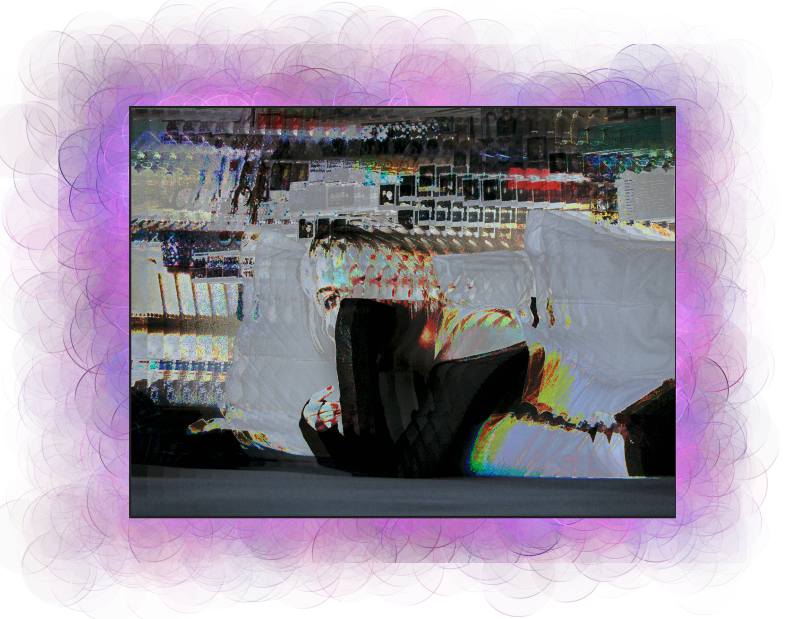

Glitch Art
Below are images I have taken and "glitched". Using this medium was enjoyable and I really like the product I get from the work I put in. The first two images are made using a text editor in which I would grab a chunk of the images text and replace it to a different spot. The emphasis on the eyes in the first image is very appealing to me as well as the distortion of most qualities of the human body on the second. For the third image, Audacity was used with an echo effect. The effect of the image is something I really liked and felt I could build off of.



The next images are a progression of playing with Audacity and Adobe Photoshop. I took the image from Pinterest because of how prominent the eyes were then put it into Audacity and edited it with an echo effect. Putting it back into Photoshop and adding the original photo's eyes back in with a blur on the edges created an effective way of emphasizing eyes in an image. I was happy with the end creation.